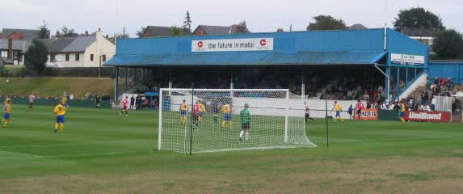
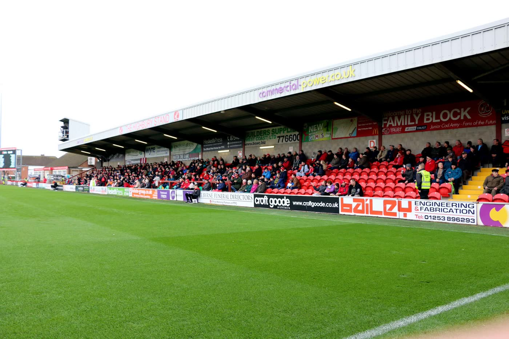
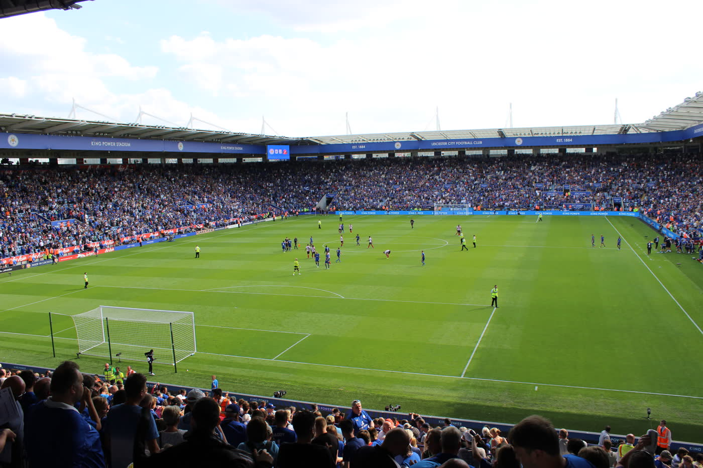

Van de fabrieksvloer naar de Premier League

Vergeet de Premier League even. Hier, in de heuvels boven Sheffield, begint het echte verhaal. Stocksbridge Park Steels — een clubnaam die niemand kent, op een veld waar de modder tot je enkels komt. Jamie Vardy werkte overdag in een fabriek en speelde hier 's avonds onder flikkerende lampen. Na afloop: een biertje in de kantine, schouder aan schouder met je teamgenoten.

Een vissersplaatsje aan de kust van Lancashire. Fleetwood Town speelde nog maar net in het profvoetbal toen Jamie Vardy hier tekende. Highbury Stadium — een stadion waar je de zee kunt ruiken en waar de wind door de tribunes giert. Dit is het Engeland van de lagere divisies. Kleine stadions met karakter. Fans die elke week komen, ongeacht de stand. Fish and chips na de wedstrijd.

5000 tegen 1. Dat waren de odds dat Leicester City kampioen zou worden. Niemand geloofde het — behalve de spelers zelf. Jamie Vardy, de jongen van de fabrieksvloer, scoorde in elf opeenvolgende Premier League-wedstrijden en leidde zijn team naar het onmogelijke. Sta in het King Power Stadium. Voel de tribunes trillen. Loop door de straten waar een hele stad samensmolt in puur geluk.
Er ging iets mis. Probeer het opnieuw.
We gebruiken je e-mail alleen om je informatie over deze reis te sturen.
Bedankt! We sturen je meer informatie.